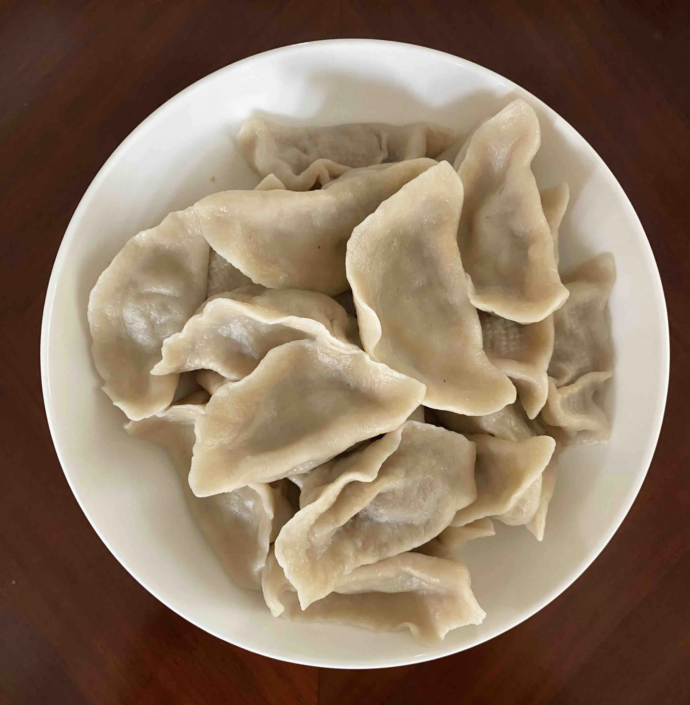
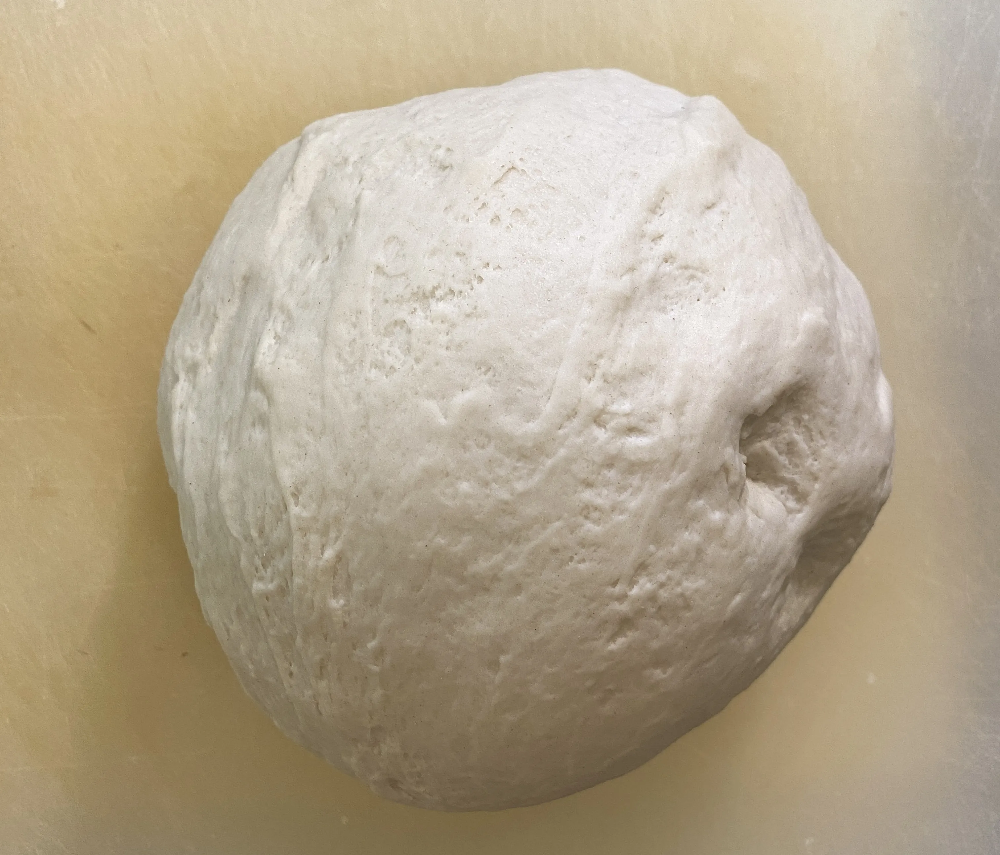
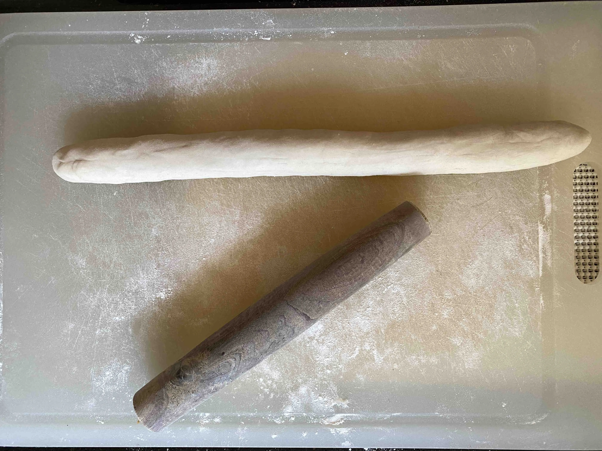
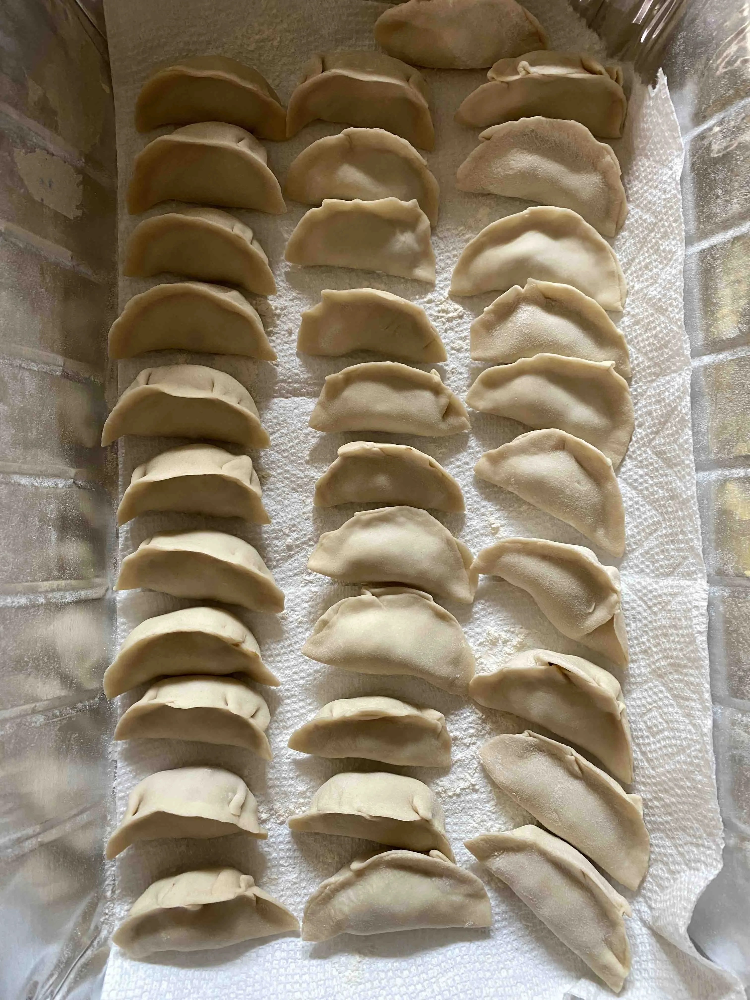

Dumplings
A simple homemade dumpling dough with a shrimp filling and a few visual checkpoints for shaping.

Ingredients
- Shrimp
- Cilantro
- Soy sauce
- 3 cups flour
- 1 cup water
Steps
-
Gradually mix water into the flour to make the dough, then let it rest for a bit.
-
Roll the dough into a long rope.
-
Cut the dough into small pieces and flatten them into wrappers.
-
Fill the dumpling skins and fold them shut.
-
Boil water and cook the dumplings for about 5 minutes, until they float and look plump.
Notes
Dust the wrappers lightly with flour if they start sticking, and keep the filling modest so the dumplings are easier to seal.
Step Photos


